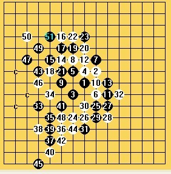
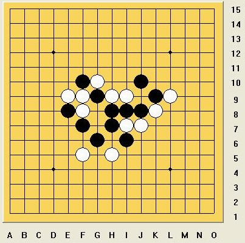

高难VCT收集贴，欢迎推荐！
#1 <font color="red">高难VCT收集贴，欢迎推荐！</font> 作者：逆刃 发表时间：2012-4-18 20:02:55
论坛这个习题版块里面收藏了不少经典的题目，有的VCT题目非常变态，即使软件计算都非一时半会能解决。在此设置一个高难VCT收集贴，以满分五星为标准。欢迎跟帖发表你所见过的认为非常复杂，或非常经典，或非常巧妙的VCT题目，按格式要求跟帖者均奖励威望，不需要贴答案。格式如下：
难度：★★★★★（星级以五星为最高，跟帖者自行评定）
题目：（以下随便举例，可使用论坛贴图，也可以上传图片）
点评：写点个人感受，比如为何经典，有何收获。
原帖地址：有的话就贴一下。
题目来源：有的话就写，不知道就算了。
［ 小红眼镜 于 2012-4-18 21:14:30 时花20金币送鲜花一朵］
［ 空恨社小仙 于 2012-4-20 14:32:10 时花20金币送鲜花一朵］
#2 Re:高难VCT收集贴，欢迎推荐！ 作者：逆刃 发表时间：2012-4-18 20:09:16
我先来一个。
难度：★★★★★
题目：黑先VCT
点评：整个进攻联系全盘子力，活棋中无一废子，后面做杀非常巧妙，进攻选择上可以借鉴棋型思路。
原帖地址：ShowPost.asp?ThreadID=16937
题目来源：左伟光在论坛提出，之后我发现原来有VCT。
最好是先选择认为难度最大的跟帖，之后再从经典、手数及复杂程度上考虑。
［此帖子已被 逆刃 在 2012-4-18 20:11:13 编辑过］
#3 Re:高难VCT收集贴，欢迎推荐！ 作者：逆刃 发表时间：2012-4-18 20:20:13
再来一个：
难度：★★★★★
题目：疏星经典必败12，黑先VCT
点评：一个很迷惑人的骗招，黑棋应对不当很可能失去赢的机会，奇妙的是黑棋可以一杀到底，一气呵成！
原帖地址：ShowPost.asp?ThreadID=6079（贵宾区）
题目来源：网络对局，网络流传。
#4 Re:高难VCT收集贴，欢迎推荐！ 作者：自来水 发表时间：2012-4-18 21:03:02
难度：★★★★★
题目：金星流浪者之梦
点评：各种强难VCT合体，深度大，极复杂...
题目来源：经典金星二打必胜。
［此帖子已被 自来水 在 2012-4-18 21:13:14 编辑过］
［ 逆刃 于 2012-4-18 23:45:29 时奖励此帖[金币加 100 威望加1］
#5 Re:高难VCT收集贴，欢迎推荐！ 作者：啊呆 发表时间：2012-4-19 19:03:13
顶贴~［ 空恨社小仙 于 2012-4-20 14:31:57 时花20金币送鲜花一朵］
#6 Re:啊呆【==Re:高难VCT收集贴，欢迎推荐！==】 作者：空恨社小仙 发表时间：2012-4-20 3:19:04
难度:★★★★★
题目:寒星一打一强8变式补充（盘端问题已解决）
点评:用一个超级vct解决了多年以来的老问题,以鲜明的流氓思路,强大的先手意识,刷新了经典老定式中猥琐复杂交换众多的致胜方式,堪称青出于蓝而胜于蓝,不可不顶!
［ 逆刃 于 2012-4-20 7:58:34 时奖励此帖[金币加 100 威望加1］
［ 自来水 于 2012-4-20 8:33:49 时花20金币送鲜花一朵］
［ 自来水 于 2012-4-20 8:34:08 时花20金币送鲜花一朵］
［ 自来水 于 2012-4-20 8:34:12 时花20金币送鲜花一朵］
#7 Re:高难VCT收集贴，欢迎推荐！ 作者：自来水 发表时间：2012-4-20 6:31:33
 LS这用词...太帅了
LS这用词...太帅了
但这个VCT...还是存在更简单解，所以难度打折扣，而且终结者能算出来。。。
［ 空恨社小仙 于 2012-4-20 14:30:15 时花20金币送鲜花一朵］
#8 Re:高难VCT收集贴，欢迎推荐！ 作者：小小亦默 发表时间：2012-4-20 10:29:29
还可以啦 我觉得不错［ 空恨社小仙 于 2012-4-20 14:31:30 时花20金币送鲜花一朵］
#9 Re:高难VCT收集贴，欢迎推荐！ 作者：自来水 发表时间：2012-4-20 12:56:10
那次是不会利用缝隙间斜线，左右子力没有连接好，所以辗转到右下角很折腾地出来一个VCT ..现在这样就很明确了
..现在这样就很明确了
话说小仙见过的最难VCT应该有超级难的吧...都留着等待升值呢
［此帖子已被 自来水 在 2012-4-20 13:00:56 编辑过］
［ 空恨社小仙 于 2012-4-20 14:30:40 时花20金币送鲜花一朵］
#10 Re:自来水【==Re:高难VCT收集贴，欢迎推荐！==】 作者：空恨社小仙 发表时间：2012-4-20 14:36:53
#11 Re:逆刃【==高难VCT收集贴，欢迎推荐！==】 作者：空恨社小仙 发表时间：2012-4-20 14:43:42
难度：★★★★★
题目:银月二打必败16之(21手黑先vct)
点评:此题为本人自己拆棋时纯人脑计算所得,评论应该如何写就留给各位大师们吧~
［此帖子已被 空恨社小仙 在 2012-4-20 14:47:08 编辑过］
#12 Re:空恨社小仙【==Re:逆刃【==高难VCT收集贴，欢迎推荐！==】==】 作者：空恨社小仙 发表时间：2012-4-20 14:54:43
补充上题:
后来有了终结者,用它计算也能算出vct,只是算杀时间比较久,而且与本人的纯人脑计算出来结果完全不同~ 图一为软件计算所得;图二为人脑计算所得;
图一为软件计算所得;图二为人脑计算所得;
#13 Re:高难VCT收集贴，欢迎推荐！ 作者：没事摆石子玩 发表时间：2012-4-20 18:25:37
我也来凑个兴吧 一个偶然发现的题目［ 逆刃 于 2012-4-20 18:49:55 时奖励此帖[金币加 100 威望加1］
#14 Re:高难VCT收集贴，欢迎推荐！ 作者：没事摆石子玩 发表时间：2012-4-20 18:29:01
［ 逆刃 于 2012-4-20 19:02:03 时花20金币送鲜花一朵］
［ 自来水 于 2012-4-20 19:04:14 时花20金币送鲜花一朵］
［ 空恨社小仙 于 2012-4-20 21:38:04 时花20金币送鲜花一朵］
［ 山城刀客 于 2012-4-21 0:21:25 时花20金币送鲜花一朵］
［ 山城刀客 于 2012-4-21 0:22:38 时花20金币送鲜花一朵］
#15 Re:高难VCT收集贴，欢迎推荐！ 作者：没事摆石子玩 发表时间：2012-4-20 18:36:12
忘了说难度 貌似也有4到5星吧 长度不算短了 美妙之处在于经典解法一手43做杀都不用 异常简洁 但是人脑算那么远也很难 很适合作为高级目算题#16 Re:高难VCT收集贴，欢迎推荐！ 作者：自来水 发表时间：2012-4-21 22:05:53
顶一个，14L的VCT很牛很靠谱
#17 Re:高难VCT收集贴，欢迎推荐！ 作者：啊呆 发表时间：2012-4-22 0:05:24
黑先胜VCT
#18 Re:高难VCT收集贴，欢迎推荐！ 作者：啊呆 发表时间：2012-4-22 0:17:10
发个常见的.....
白先胜 VCT
#19 Re:高难VCT收集贴，欢迎推荐！ 作者：啊呆 发表时间：2012-4-22 0:35:14
黑先胜 VCT
#20 Re:啊呆【==Re:高难VCT收集贴，欢迎推荐！==】 作者：山城刀客 发表时间：2012-4-22 10:17:04
引用：
原文由 啊呆 发表于 2012-4-22 0:35:14 :
黑先胜 VCT
请LS给出这个VCT的正解，谢谢！
#21 Re:高难VCT收集贴，欢迎推荐！ 作者：自来水 发表时间：2012-4-22 11:54:05
会杀不会T...
［ 山城刀客 于 2012-4-22 15:10:12 时花20金币送鲜花一朵］
［ 山城刀客 于 2012-4-22 15:10:37 时花20金币送鲜花一朵］
［ 啊呆 于 2012-4-26 11:43:43 时花20金币送鲜花一朵］
#22 Re:高难VCT收集贴，欢迎推荐！ 作者：啊呆 发表时间：2012-4-23 19:42:35
发错了第三个不是VCT 抱歉［ 自来水 于 2012-4-23 19:44:00 时花20金币送鲜花一朵］
#23 Re:啊呆【==Re:高难VCT收集贴，欢迎推荐！==】 作者：空恨社小仙 发表时间：2012-4-24 23:27:26
回17L 见到回贴莫忘奖励哈
见到回贴莫忘奖励哈［ 啊呆 于 2012-4-26 11:41:46 时花20金币送鲜花一朵］
#24 Re:啊呆【==Re:高难VCT收集贴，欢迎推荐！==】 作者：空恨社小仙 发表时间：2012-4-24 23:32:06
 这个习题思路不难找,就是拆完累人...软件扫起来相当费时,请贴主给予一定的金币和威望做为辛苦费
这个习题思路不难找,就是拆完累人...软件扫起来相当费时,请贴主给予一定的金币和威望做为辛苦费［ 有志青年 于 2012-4-26 6:56:30 时奖励此帖[金币加 100 威望加1］
［ 啊呆 于 2012-4-26 11:42:24 时花20金币送鲜花一朵］
#25 Re:高难VCT收集贴，欢迎推荐！ 作者：红豆 发表时间：2012-4-26 1:40:41
果真是强贴。。赞一个#26 Re:高难VCT收集贴，欢迎推荐！ 作者：天狼之光 发表时间：2013-2-28 17:28:08
难度:★★★★★
题目：天狼VCT之北极雪
来源 ：改编自北极星的难题，原题中，使用北方（上方）边线黑子指引黑棋进攻的方向，故名“北极星”。
现增加白棋的干扰，使得黑胜变得更加艰难，由于白棋的散布形似飘雪，故改名“北极雪”。
点评：作为出题者，表示不知道从什么时候开始，情况就完全失控了……
［ 小红眼镜 于 2013-3-1 11:54:03 时奖励此帖[金币加 100 威望加1］
#27 Re:高难VCT收集贴，欢迎推荐！ 作者：啊呆 发表时间：2013-4-21 13:23:13
一图三图两个应该不算VCT胜
求这个16的VCT胜法~
［此帖子已被 啊呆 在 2013-4-21 13:24:13 编辑过］
［ 小红眼镜 于 2013-4-21 15:16:08 时奖励此帖[金币加 100 威望加1］
#28 Re:高难VCT收集贴，欢迎推荐！ 作者：逆刃 发表时间：2013-4-21 22:39:20
［ 啊呆 于 2013-4-22 21:52:28 时花20金币送鲜花一朵］
［ 啊呆 于 2013-4-22 21:52:28 时花20金币送鲜花一朵］
［ 啊呆 于 2013-4-22 21:52:28 时花20金币送鲜花一朵］
［ 啊呆 于 2013-4-22 21:52:28 时花20金币送鲜花一朵］
［ 啊呆 于 2013-4-22 21:52:28 时花20金币送鲜花一朵］
#29 Re:高难VCT收集贴，欢迎推荐！ 作者：啊呆 发表时间：2013-4-22 21:51:06
厉害 逆刃兄 还差这个18的VCT胜法#30 Re:高难VCT收集贴，欢迎推荐！ 作者：逆刃 发表时间：2013-4-23 10:58:50
LS这个没有VCT吧#31 Re:高难VCT收集贴，欢迎推荐！ 作者：啊呆 发表时间：2013-4-23 14:50:21
可是你题目写的黑先VCT呀#32 Re:高难VCT收集贴，欢迎推荐！ 作者：逆刃 发表时间：2013-4-23 23:06:49
哦，我弄错了，没有注意到这个分支。#33 Re:高难VCT收集贴，欢迎推荐！ 作者：来来往往 发表时间：2013-8-1 20:00:16
黑先，VCT
［ 逆刃 于 2013-8-1 21:48:53 时奖励此帖[金币加 100 威望加1］
#34 Re:天狼之光【==Re:高难VCT收集贴，欢迎推荐！==】 作者：空恨社小仙 发表时间：2013-8-1 21:20:48
北极雪正解
#35 Re:高难VCT收集贴，欢迎推荐！ 作者：逆刃 发表时间：2013-8-1 21:54:28
给出33楼答案的有奖励。
#36 Re:高难VCT收集贴，欢迎推荐！ 作者：雨一直下 发表时间：2013-8-2 12:05:09
[/dl
最强变化，逆LS发威望啦~~
 vct.rar
vct.rar
［此帖子已被 雨一直下 在 2013-8-2 12:07:16 编辑过］
［ 逆刃 于 2013-8-2 16:54:15 时奖励此帖[金币加 100 威望加1］
#37 Re:高难VCT收集贴，欢迎推荐！ 作者：来来往往 发表时间：2013-8-2 16:20:36
楼上牛啊，转那左边也VCT啊，虽然复杂了很多看了下确实是VCT。这是我的VCt。［ 逆刃同学于 2013-8-2 16:55:25 时花20金币送鲜花一朵］
［ 逆刃同学于 2013-8-2 16:55:25 时花20金币送鲜花一朵］
［ 逆刃同学于 2013-8-2 16:55:25 时花20金币送鲜花一朵］
［ 雨一直下同学于 2013-8-2 17:00:47 时花20金币送鲜花一朵］
［ 雨一直下同学于 2013-8-2 17:00:47 时花20金币送鲜花一朵］
#38 Re:高难VCT收集贴，欢迎推荐！ 作者：来来往往 发表时间：2013-8-2 21:44:30
#39 Re:高难VCT收集贴，欢迎推荐！ 作者：雨一直下 发表时间：2013-8-3 13:50:26
确实有点意思，误入迷途，迷途知返，返璞归真，真有意思~
［此帖子已被 雨一直下 在 2013-8-3 14:12:54 编辑过］
#40 Re:高难VCT收集贴，欢迎推荐！ 作者：来来往往 发表时间：2013-8-3 22:02:25
还注意保持VCT后面的作子也有讲究的，若按终结者那就不是VCT了，得自己找能VCT必杀点，这个是我看了有的棋谱还是个黑点，最后用这样VCT杀出来了。#41 Re:高难VCT收集贴，欢迎推荐！ 作者：来来往往 发表时间：2013-8-4 22:03:06
白先VCT。这个VCT难度有点大，有兴趣的就去拆下，没兴趣最好略过。
［ 逆刃 于 2013-8-4 23:43:48 时奖励此帖[金币加 100 威望加1］
［ 逆刃 于 2013-8-4 23:44:14 时奖励此帖[金币加 100 威望加1］
#42 Re:高难VCT收集贴，欢迎推荐！ 作者：逆刃 发表时间：2013-8-4 23:48:11
已经验证！
最强的一路：黑棋C9位置，最后是这样，白棋I11，G11冲四后，在G13做抓禁杀，黑棋G14唯一之后，再于D11活三后，在D13做杀完成。
次强的一路：黑棋F10位置，相对简单，C9后，黑棋只能先冲四，之后白棋冲四后于C10杀之。
难度5颗星！
［此帖子已被 逆刃 在 2013-8-4 23:51:10 编辑过］
#43 Re:逆刃【==Re:高难VCT收集贴，欢迎推荐！==】 作者：逆刃 发表时间：2013-8-5 0:03:06
扫了个地毯传上来吧，暂时加密，5天后放密码。题目很好，先留着给有兴趣的朋友玩玩，做出来有奖励！
VCT-逆刃.rar
#44 Re:高难VCT收集贴，欢迎推荐！ 作者：小帮帮 发表时间：2013-8-5 11:41:51
地毯，已经做出，但这个严格意义上不是完全的VCT吧
这个应该是最强一路的，难道还有更强的VCT的下法吗？
［ 逆刃同学于 2013-8-5 15:43:25 时花20金币送鲜花一朵］
#45 Re:高难VCT收集贴，欢迎推荐！ 作者：逆刃 发表时间：2013-8-5 12:08:36
确实存在VCT。#46 Re:高难VCT收集贴，欢迎推荐！ 作者：梅边笛 发表时间：2013-8-5 12:17:22
发题有2个威望，做题有几个呀？
疏星vct.rar
［ 逆刃 于 2013-8-5 12:34:05 时奖励此帖[金币加 100 威望加1］
#47 Re:梅边笛【==Re:高难VCT收集贴，欢迎推荐！==】 作者：空恨社小仙 发表时间：2013-8-5 15:08:12
这个上传的谱中，这一路是地毯还是VCT？
#48 Re:高难VCT收集贴，欢迎推荐！ 作者：yoda 发表时间：2013-8-5 15:24:20
这样还是可以VCT吧
［ 雨一直下同学于 2013-8-5 15:47:35 时花20金币送鲜花一朵］
［ 雨一直下同学于 2013-8-5 15:47:35 时花20金币送鲜花一朵］
［ 雨一直下同学于 2013-8-5 15:47:35 时花20金币送鲜花一朵］
［ 空恨社小仙同学于 2013-8-5 21:13:56 时花20金币送鲜花一朵］
［ 空恨社小仙同学于 2013-8-5 21:13:56 时花20金币送鲜花一朵］
［ 空恨社小仙同学于 2013-8-5 21:13:56 时花20金币送鲜花一朵］
［ 空恨社小仙同学于 2013-8-5 21:13:56 时花20金币送鲜花一朵］
［ 空恨社小仙同学于 2013-8-5 21:13:56 时花20金币送鲜花一朵］
#49 Re:高难VCT收集贴，欢迎推荐！ 作者：逆刃 发表时间：2013-8-5 15:40:10
既然答案都公布了，密码可以公开了，43楼密码是mdssbx。［ 雨一直下同学于 2013-8-5 15:48:03 时花20金币送鲜花一朵］
［ 雨一直下同学于 2013-8-5 15:48:03 时花20金币送鲜花一朵］
［ 雨一直下同学于 2013-8-5 15:48:03 时花20金币送鲜花一朵］
#50 Re:高难VCT收集贴，欢迎推荐！ 作者：来来往往 发表时间：2013-8-5 16:52:55
44楼的24确实也能地毯，但黑活三啊，做杀啊，地毯时候很麻烦吧反正我地毯时，觉得很烦的，后来偶然发现白冲四后可以直接反而进行VCT，虽然难度大，但绝对没有那个猥琐再猥琐来的烦人，可我也已经用了那个24地毯了，感到自己做了一段无用功了。
#51 Re:高难VCT收集贴，欢迎推荐！ 作者：来来往往 发表时间：2013-8-5 17:00:25
46楼的黑37白要了好很多，否则你有好几个点要走那个跳三，自己要了就只有唯一点了。#52 Re:来来往往【==Re:高难VCT收集贴，欢迎推荐！==】 作者：逆刃 发表时间：2014-4-18 21:16:19
发上来收藏一下吧，把终结者都算爆了！！提示有VCT的话应该会容易些，难度5颗星！！！

［此帖子已被 逆刃 在 2014-4-18 21:17:13 编辑过］
#53 Re:高难VCT收集贴，欢迎推荐！ 作者：来来往往 发表时间：2014-5-7 0:04:29
推荐两个难度高的ＶＣＴ：
［ 逆刃 于 2014-5-7 19:36:06 时奖励此帖[金币加 100 威望加1］
#54 Re:高难VCT收集贴，欢迎推荐！ 作者：小帮帮 发表时间：2014-5-7 15:26:07
52楼，逆刃大师的题目好难！#55 Re:高难VCT收集贴，欢迎推荐！ 作者：逆刃 发表时间：2014-5-7 19:34:45
第二题不难，
第一题有意思，这种VCT若不是扫地毯应该很难发现！
#56 Re:高难VCT收集贴，欢迎推荐！ 作者：自来水 发表时间：2014-5-8 15:22:48
［ 逆刃同学于 2014-5-8 18:12:22 时花20金币送鲜花一朵］
［ 逆刃同学于 2014-5-8 18:12:22 时花20金币送鲜花一朵］
［ 逆刃同学于 2014-5-8 18:12:22 时花20金币送鲜花一朵］
#57 Re:高难VCT收集贴，欢迎推荐！ 作者：自来水 发表时间：2014-5-8 16:09:11
来自 ShowPost.asp?ThreadID=20876
今年的自编VCT
［ 逆刃 于 2014-5-8 17:53:28 时奖励此帖[金币加 100 威望加1］
#58 Re:高难VCT收集贴，欢迎推荐！ 作者：逆刃 发表时间：2014-5-8 18:11:51
第一题
［ 自来水同学于 2014-5-8 18:23:47 时花20金币送鲜花一朵］
#59 Re:高难VCT收集贴，欢迎推荐！ 作者：山城刀客 发表时间：2014-5-16 18:42:24
iwzq.swf?qp=h8h9j10i9g9i7k9i11i10h10g11g10i8h12k8j8k7k10l7h11h13i12j13j12k12d10f10
这个34杀，最强一路如下：
别的35更弱，就不发了。
［ 逆刃 于 2014-5-16 20:49:59 时奖励此帖[金币加 100 威望加1］
#60 Re:高难VCT收集贴，欢迎推荐！ 作者：来来往往 发表时间：2014-5-16 23:23:38
我觉得下面的35最复杂，我弄错了没？哪一步能简单化？
#61 Re:高难VCT收集贴，欢迎推荐！ 作者：来来往往 发表时间：2014-6-19 8:57:45
白ＶＣＴ。
题外话：流星二打15这个很常见，25、27，29再下32那，目前只有这一路没有绝对地毯，并不是说这路怎么怎么强，而是因为这一路地毯很要耐心。若这路谁彻底地毯，那这个15就是绝对必败，而非理论必败。
#62 Re:高难VCT收集贴，欢迎推荐！ 作者：来来往往 发表时间：2014-6-22 20:17:26
黑ＶＣＴ